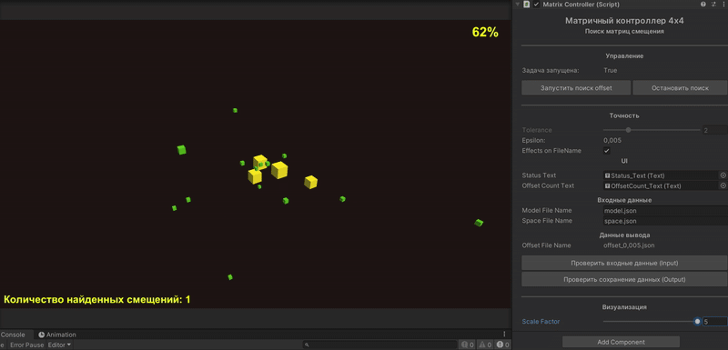
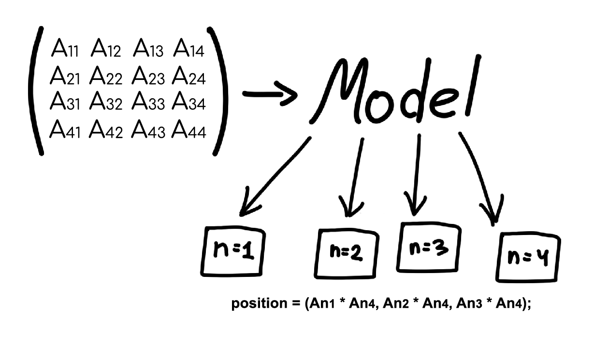
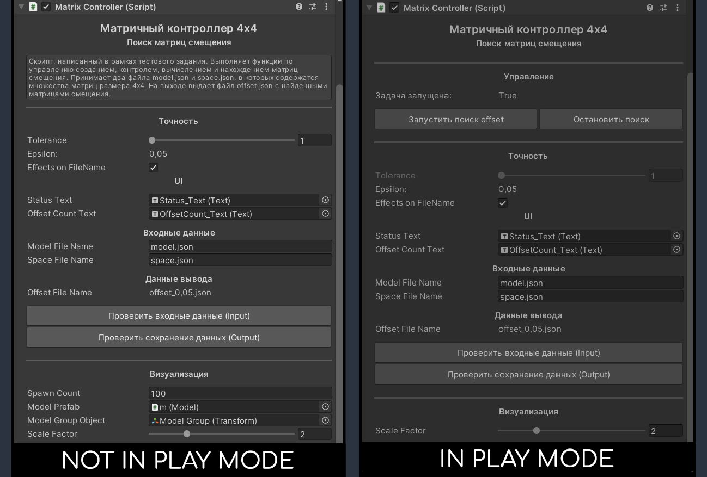
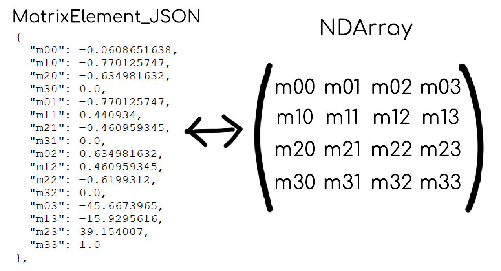

1. Реализовать загрузку/выгрузку файлов JSON с локального диска.
• Реализуем тип MatrixElement, соответствующий содержанию одной матрицы в массиве матриц, содержащихся в исходных JSON файлах. В дальнейшем сериализуем/десериализуем, используя Newtonsoft.
• Для чтения/записи используем System.IO.
• Используем AssetDatabase.Refresh();, чтобы не обновлять интерфейс редактора вручную.
2. Выбрать инструмент для работы с матрицами и реализовать алгоритм поиска всех возможных матриц смещений (offset) для множества матриц модели (model), таких что она целиком содержится во множестве матриц пространства (space).
• В качестве инструмента был выбран NumSharp. В данной библиотеке есть тип - NDArray, при помощи которого можно представлять матрицу и производить ряд операций над ней. В библиотеке NumSharp нет операции получения обратной матрицы или матричного "деления", поэтому реализуем алгоритм получения обратной матрицы самостоятельно методом Гаусса-Жордана.
• Для того чтобы вычислить матрицу смещения offset, которая соответствует условию: offset * A = B, мы умножаем матрицу B (space) на обратную матрицу модели A (model) => offset = B * A-1, offset = space[n] * model-1.
• После того, как вычислили offset, проверяем содержится ли множество матриц offset * model[n] в множестве space. Для сравнения матриц используем поэлементное сравнение с учетом погрешности (tolerance) - получаем модуль разницы элемента offsetMatrix[i,k]-offset[n][i,k] <= tolerance. Если хотя бы одна матрица не содержится, вычисляем следующий offset. Если все множество матриц offset*model[n] соответствует матрицам из множества space, сохраняем offset, как найденный.
3. Визуализировать процесс поиска
• Отображаем ход процесса в процентах - Вычисляем коэффициент, в зависимости от количества матриц в множестве (100/количество). В момент прохода по элементам считаем его и пробуем получить остаток от деления: если число целое, отображаем результат деления как процент.
• При каждом успешном найденном множестве offset, прибавляем и отображаем количество в счетчике найденных решений.
• Отображаем ход процесса через кубы (элемент модели Model) - меняем цвет и размер. Поскольку матрица 4х4, я решил что на каждую строку будет приходится один куб - умножаем три первых элемента матрицы в строке на последний и получаем вектор позиции (условно, x = row[0]*row[3]; y = row[1]*row[3]; z = row[2]*row[3]). Таким образом, для одной матрицы соответствует один объект (Model), который в свое время содержит и управляет 4-мя элементами. При попытке найти и сравнить матрицу смещения, управляем размером и цветом элементов объекта (Model). Актуальная матрица (которую мы пытаемся сравнить) - следующее поведение - объект Model: активен, а его элементы имеют полный размер и один цвет. Если матрица совпала, уменьшаем у элементов размер и меняем цвет на другой. Если какая-нибудь актуальная матрица НЕ совпала, отключаем все объекты модели (элементы, соответственно тоже) и пробуем с другим offset. Также отключаем все объекты модели, когда нашли полноценное множество offset.
1. MatrixController.
Располагается на сцене на объекте Matrix Controller. Управляет функциями загрузки/выгрузки, валидации, процесса, хранения, визуализации и операций над матрицами.
• Кнопки "Проверить входные данные" и "Проверить сохранение данных" позволяют проверить результат загрузки и инициализации/сохранения данных без необходимости запуска Play Mode.
• Блок управления отображается во время Play Mode и позволяет видеть статус процесса, а также управлять запуском и остановкой процесса.
• Блок точности позволяет управлять степенью точности. Блок также содержит опциональный параметр, влияющий на имя Output файла.
• В блоке входных данных можно указать имя файлов для множества model и space. Эти файлы скрипт будет ожидать в папке: JSON_Storage/Input/.
• В блоке выходных данных можно наблюдать имя итогового файла. В конце выполнения процесса или при нажатии на кнопку сохранения, скрипт будет сохранять его в папку: JSON_Storage/Output/.
• В блоке визуализации можно указать префаб, представляющий объект (Model) матрицы и объект, который будет являтся родительским для всех объектов. В поле Spawn Count можно указать сколько экземпляров будет создано при старте сцены. Объекты хранятся в Pool Manager - он динамично расширяется при необходимости. Scale Factor - позволяет контролировать размер объектов.
2. MatrixProcessor.
• Реализует математические операции над матрицами.
• Отвечает за конвертацию списка элементов List<MatrixElement_JSON>() в список матриц List<NDArray>() и обратно.
3. JSON_Loader
Отвечает за загрузку и десериализацию данных из JSON в список List<MatrixElement_JSON>(), и обратный процесс - конвертация списка в JSON и сохранение.
4. MatrixElement_JSON
Представляет объект матрицы в том виде, в котором он содержится в массиве, в JSON файле.
5. Model
Представляет объект (Model) и реализует необходимое поведение для визуализации элементов матрицы.
6. ColorController
Класс для элементов модели, отвечающий за изменение цвета материала.